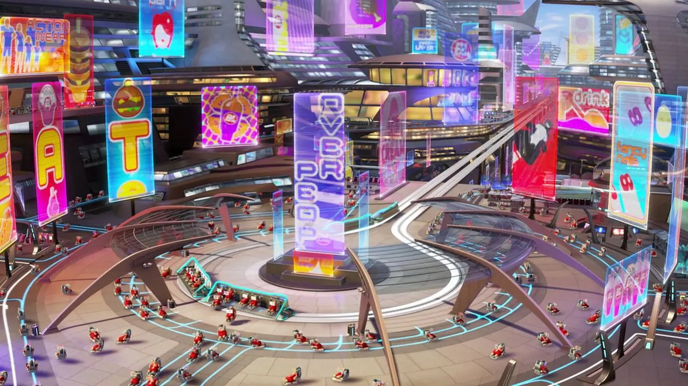
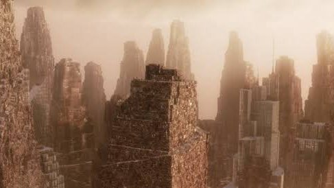

Amara's Law
Attributed to futurist Roy Amara, this law states that "we tend to overestimate the effect of a technology in the short run and underestimate the effect in the long run" (as cited in Quirke, 2023). Amara's Law is grounded in the human cognitive tendency toward linear projection — we extrapolate current momentum rather than modelling compounding, threshold, or discontinuous change. The result is a systematic pattern of early hype followed by disappointment, then eventual transformative impact that few anticipated.
Applied to the WALL-E unit class, Amara's Law generates a striking tripartite reading. In the short run, BnL almost certainly over-hyped the fleet's initial capability — the public expectation was a five-year cleanup programme, which the technology demonstrably could not deliver. The medium run brought the "Trough of Disillusionment" (the planet remained toxic; the fleet failed); humanity evacuated. But the long run — 700 years of uninterrupted autonomous operation — produced an effect that no designer or policy-maker of 2105 could have anticipated: the complete transformation of Earth's surface topography by a single machine class. This is Amara's Law at its most extreme: a technology effect so under-anticipated that it was not even recognised as a risk.
AMARA'S LAW — WALL·E UNIT CLASS
Expectation vs. actual impact across the 700-year operational timeline. Adapted from Amara (as cited in Quirke, 2023).
The Gartner Hype Cycle
GARTNER HYPE CYCLE — WALL·E UNIT CLASS
WALL-E's technology trajectory mapped against the five Hype Cycle phases. Note: in BnL's scenario, the Slope of Enlightenment is never reached — represented by the dashed recovery path. Gartner (2024).

Pixar Animation Studios. (2008). WALL-E [Film]. Walt Disney Pictures.
The Gartner Hype Cycle (Gartner, 2024) models the maturity trajectory of any emerging technology across five phases: the Technology Trigger (the innovation event that generates initial attention); the Peak of Inflated Expectations (irrational optimism, media amplification); the Trough of Disillusionment (reality check, early adopter failures); the Slope of Enlightenment (iterative improvement, best-practice emergence); and the Plateau of Productivity (mainstream adoption, stable value realisation).
The WALL-E unit class traverses the first three phases with disturbing clarity. The Technology Trigger is BnL's deployment of autonomous robotic compactors — a genuine engineering breakthrough. The Peak of Inflated Expectations is "Operation Cleanup": the global rollout of millions of units, backed by BnL's promise of a 5-year planetary restoration. The Trough of Disillusionment is the silent catastrophe — the planet remains toxic, the fleet fails unit by unit, and humanity enters a 700-year stasis aboard the Axiom rather than returning to iterate and improve the system.
What WALL·E uniquely dramatises is a Hype Cycle that never reaches its Slope of Enlightenment. In the Gartner model, enlightenment requires human actors to learn from failure, invest in second-generation solutions, and adjust the deployment architecture. BnL eliminated the institutions capable of doing this. The Trough of Disillusionment became permanent — until EVE's discovery of the seedling creates the conditions for a belated Slope of Enlightenment 700 years late (Gartner, 2024; Stanton, 2008).
Kondratiev Waves
Nikolai Kondratiev (1935) identified recurring long-wave cycles of approximately 40–60 years in capitalist economies, each driven by a cluster of transformative technologies and corresponding institutional reorganisation. Later extended by Schumpeter (1939) and Perez (2002), Kondratiev Waves (K-Waves) describe the rhythm of techno-economic paradigm shifts: steam (K1), railways (K2), steel and electricity (K3), oil and automotive (K4), information and communications (K5), and the emerging biotechnology and AI wave (K6). Each wave generates a surge of innovation, an institutional maturity phase, and a creative-destruction trough before the next technological cluster emerges.
WALL-E's focal technology — autonomous robotics, solar energy integration, and machine learning — sits squarely within the K6 wave (approximately 2020–2080 in most academic projections). The film's 22nd-century setting implies a completed K6 and at least partial progression through K7 (likely defined by full autonomous systems, synthetic biology, and circular economy infrastructure). BnL's vertical monopoly, however, structurally prevents the normal K-Wave mechanism from operating: each new wave requires competing institutions, venture capital, and academic research to identify and exploit the next technological cluster. By absorbing all of these functions, BnL created a K-Wave that could not transition — locking global civilisation into a terminal phase of K6 automation without the creative destruction necessary to generate K7.
KONDRATIEV WAVES — K1 TO K6+ (WALL·E)
WALL-E's technology cluster (autonomous robotics + AI + solar) positions in K6. BnL's monopoly prevents K7 from emerging — producing a 700-year plateau instead of a new wave. Kondratiev (1935); Perez (2002).
| WAVE | DRIVER | WALL·E LINK |
|---|---|---|
| K4 | Oil & automotive | Linear economy that generated the waste crisis |
| K5 | ICT & internet | BnL's logistics and Axiom HUD infrastructure |
| K6 ★ | AI & robotics | WALL-E fleet — BnL monopoly prevents K7 |
| K7? | Bio & circular | End-credits restoration — belated K7 emergence |
The Technology S-Curve
TECHNOLOGY S-CURVE — WALL·E UNIT CLASS
The WALL-E class reaches technical maturity and then enters a pathological plateau — no successor S-curve emerges because BnL has eliminated the knowledge infrastructure required to generate one. Rogers (2003); Utterback (1994); Zaman (2022, 2023).

Pixar Animation Studios. (2008). WALL-E [Film]. Walt Disney Pictures.
The Technology S-Curve, formalised through Rogers' (2003) Diffusion of Innovations and Utterback's (1994) product–process innovation model, describes the characteristic sigmoid lifecycle of any technology. Zaman (2022) further develops this as an episodic evolution framework, identifying four phases driven by technology advancement, revealed user requirements, emerging externalities, and complementary technology availability: a slow emergence phase (R&D investment, limited adoption); a steep rapid growth phase (scaling, diffusion, cost reduction); a flattening maturity phase (diminishing returns on investment, incremental improvement); and either a decline phase (superseded by the next S-curve) or a pathological plateau (maturity sustained indefinitely when no successor emerges). Zaman (2023) further distinguishes between S-curves that terminate through technological substitution versus those that plateau due to systemic lock-in — precisely the dynamic WALL-E's 700-year operational lifespan exemplifies.
The WALL-E unit class passes through the first three phases at an accelerated rate under BnL's production capacity. The rapid growth phase is the global deployment of millions of units across Earth's surface — one of the largest technology rollouts implied in any science fiction narrative. Technical maturity is reached quickly; the units perform their compaction function efficiently and reliably. But in a functioning innovation ecosystem, maturity on one S-curve triggers investment in the next S-curve — the successor technology. BnL, focused entirely on the Axiom system, invested nothing in a WALL-E successor. The maturity phase became a pathological 700-year plateau — the longest sustained S-curve tail in any speculative narrative.
Andersen and Andersen's (2014) Innovation System Foresight framework identifies this as the canonical failure mode of closed innovation systems: without the knowledge spillovers and competitive pressures of a functioning ecosystem, the successor S-curve is never funded. The film's resolution — humans returning to Earth, beginning agrarian restoration — represents the first emergence of a new S-curve: the start of a circular-economy technology cluster that WALL-E's existence has paradoxically made necessary.
Moore's Law
Moore's Law — Gordon Moore's 1965 observation that the number of transistors on an integrated circuit doubles roughly every 18–24 months — has been the engine of computing's exponential trajectory for six decades (Raza, 2024). Each doubling compounds: thirty doublings yields a billion-fold increase in compute capacity within a single technologist's career. The law's significance is not about transistors per se — it is about compound institutional commitment to a doubling trajectory. The "Death of Moore's Law" has been declared multiple times, but each declaration has triggered architectural successors — CPU to GPU to specialised neural processors — that re-engaged the doubling (Woods, 2021).
Applied to autonomous waste robotics, Moore's Law predicts that the compute substrate underlying machine perception, classification, and decision-making should advance from narrow "task automation" toward general-purpose environmental reasoning within decades. The WALL-E unit class represents a Moore's-Law trajectory that froze. In 2105 — at the moment of evacuation — autonomous compaction robots embodied state-of-the-art computer vision and classification. Projected forward 700 years under uninterrupted exponential progression, the units should have evolved through hundreds of doublings to become capable of sorting, recycling, ecosystem remediation, and self-modification. Instead, the surviving units operate on what is functionally the same architecture as their 2105 ancestors.
The framework's diagnostic value is precisely this: Moore's Law does not end through physics. It ends through governance and economic disengagement. WALL·E renders this in extremis — BnL's monopoly removed the competitive pressure that would otherwise have funded a successor architecture. The 700-year compute plateau is not a story of silicon limits; it is a story of who is willing to fund the next doubling and for what purpose (Raza, 2024; Woods, 2021). The forecast for real-world autonomous waste robotics therefore depends less on whether chip manufacturers can extend the doubling and more on whether the institutions deploying these systems remain committed to the trajectory.
Moore (1965), as cited in Raza (2024); applied trajectory derived from Woods (2021) and WALL·E (Stanton, 2008).
"Moore's Law is institutional, not physical. A monopoly that loses interest in the next doubling produces a 700-year plateau even when the silicon still has room to run."
— Derived from Raza (2024); Woods (2021); applied to WALL·E (Stanton, 2008)